117 documents en images · 447 sources
Les archives
Les pièces du dossier telles qu'on les a ouvertes : actes de naissance et de mariage, registres d'inhumation, almanachs des théâtres, Gazette des tribunaux, photographies de famille. Chacune dit d'où elle vient (dépôt, cote, vue) et ce qu'elle établit.
 16 décembre 1744 · Acte d'état civilFichier de l'état civil reconstitué, naissances, liasse « Gibeaud (1839) – Gibert (1773) » : fiches 26-50 (Gibert 1714-1773) ; fiche Gibert Geneviève, baptisée 16/12/1744, Saint-Roch
16 décembre 1744 · Acte d'état civilFichier de l'état civil reconstitué, naissances, liasse « Gibeaud (1839) – Gibert (1773) » : fiches 26-50 (Gibert 1714-1773) ; fiche Gibert Geneviève, baptisée 16/12/1744, Saint-Roch 16 décembre 1744 · Registre paroissialExtrait de baptême de Geneviève Gibert, paroisse Saint-Roch, 16/12/1744 (pièce de reconstitution déposée par la Compagnie Lafarge)
16 décembre 1744 · Registre paroissialExtrait de baptême de Geneviève Gibert, paroisse Saint-Roch, 16/12/1744 (pièce de reconstitution déposée par la Compagnie Lafarge) 24 août 1751 · Registre paroissialExtrait de baptême de François Marin Gibert, paroisse Saint-Roch, 24/08/1751 (délivré le 17/11/1768 ; pièce de reconstitution déposée par la Compagnie Lafarge)
24 août 1751 · Registre paroissialExtrait de baptême de François Marin Gibert, paroisse Saint-Roch, 24/08/1751 (délivré le 17/11/1768 ; pièce de reconstitution déposée par la Compagnie Lafarge) 19 février 1753 · Registre paroissialExtrait de baptême de Jean Louis Gibert, paroisse Saint-Gervais, 19/02/1753 (fils de Pierre Gibert et de Jeanne Antoinette Leduc ; pièce déposée par l'hospice de Bicêtre [?]) : homonyme
19 février 1753 · Registre paroissialExtrait de baptême de Jean Louis Gibert, paroisse Saint-Gervais, 19/02/1753 (fils de Pierre Gibert et de Jeanne Antoinette Leduc ; pièce déposée par l'hospice de Bicêtre [?]) : homonyme 3 mars 1771 · Registre paroissialExtrait de baptême de Marie Catherine Foucamprez, paroisse Saint-Sulpice, 3/03/1771 (pièce de reconstitution déposée par la Caisse Lafarge)
3 mars 1771 · Registre paroissialExtrait de baptême de Marie Catherine Foucamprez, paroisse Saint-Sulpice, 3/03/1771 (pièce de reconstitution déposée par la Caisse Lafarge) 17 juillet 1804 · Acte d'état civilNaissance de Jean Édouard Amélie Lepinoy, Paris 10e arr. ancien, 28 messidor an XII (17/07/1804) : extrait reconstitué
17 juillet 1804 · Acte d'état civilNaissance de Jean Édouard Amélie Lepinoy, Paris 10e arr. ancien, 28 messidor an XII (17/07/1804) : extrait reconstitué 1804 · Acte d'état civilFiche de naissance Lepinoy Jean Edouard Amélie, 27 messidor an XII (10e arr. ancien)
1804 · Acte d'état civilFiche de naissance Lepinoy Jean Edouard Amélie, 27 messidor an XII (10e arr. ancien) 14 septembre 1827 · Acte d'état civilExtrait de l'acte de décès de Marie Catherine Foucamprez, Paris ancien 5e, 14/09/1827 (délivré le 25/09/1827 ; pièce de reconstitution déposée par la Caisse Lafarge)
14 septembre 1827 · Acte d'état civilExtrait de l'acte de décès de Marie Catherine Foucamprez, Paris ancien 5e, 14/09/1827 (délivré le 25/09/1827 ; pièce de reconstitution déposée par la Caisse Lafarge)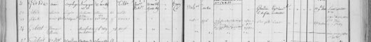
1829-1830 · Dossier administratifTable des décès et des successions, 6e bureau (anciens 9e et 10e arrondissements), lettres Gek à Giro, 1812-1830, folio « Gib », ligne 24 5 octobre 1829 · Acte d'état civilActes de l'état civil reconstitué, décès du 04/10/1829 au 05/10/1829 : chemises lues sur planche
5 octobre 1829 · Acte d'état civilActes de l'état civil reconstitué, décès du 04/10/1829 au 05/10/1829 : chemises lues sur planche 5 octobre 1829 · Acte d'état civilActes de l'état civil reconstitué, décès du 05/10/1829 au 07/10/1829 : chemises lues sur planche
5 octobre 1829 · Acte d'état civilActes de l'état civil reconstitué, décès du 05/10/1829 au 07/10/1829 : chemises lues sur planche 2 juin 1836 · Registre paroissialExtrait de baptême d'Edmond Dubart, paroisse Saint-Germain-l'Auxerrois, 2/06/1836 (délivré le 4/07/1868), pièce du dossier de reconstitution de sa naissance
2 juin 1836 · Registre paroissialExtrait de baptême d'Edmond Dubart, paroisse Saint-Germain-l'Auxerrois, 2/06/1836 (délivré le 4/07/1868), pièce du dossier de reconstitution de sa naissance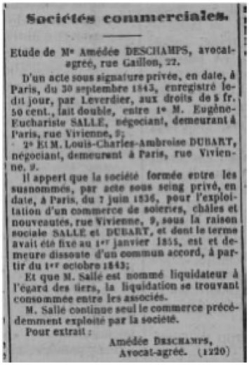
1843 · Document de la famille RobertArticle de presse de 1843 sur Louis Dubart 1853 (rétabli 1881) · Acte d'état civilDécès d'Adèle Félicie Bosse, 11/02/1853, 6e arrondissement ancien : acte rétabli en 1881 d'après l'extrait de la table des Enregistrements (mutations par décès)
1853 (rétabli 1881) · Acte d'état civilDécès d'Adèle Félicie Bosse, 11/02/1853, 6e arrondissement ancien : acte rétabli en 1881 d'après l'extrait de la table des Enregistrements (mutations par décès) 18 octobre 1854 · Acte d'état civilMariage CHASSAIGNE × FONTBONNE, Clermont-Ferrand, 18 octobre 1854
18 octobre 1854 · Acte d'état civilMariage CHASSAIGNE × FONTBONNE, Clermont-Ferrand, 18 octobre 1854 1856-1879 · Dossier administratifHypothèques, 1re conservation de Paris : table du répertoire vol. 78 f° 197 (Gibert) et répertoire des formalités vol. 23G case 477 (Gibert Camille Melchior et Thaïs Dubart)
1856-1879 · Dossier administratifHypothèques, 1re conservation de Paris : table du répertoire vol. 78 f° 197 (Gibert) et répertoire des formalités vol. 23G case 477 (Gibert Camille Melchior et Thaïs Dubart) 1860 · Dossier administratifTable des décès et des successions, 8e bureau (2e ancien puis 9e et 20e arr.), lettre G, 1846-mars 1861 : ligne n° 289, Gibert Marie Octavie (août 1860)
1860 · Dossier administratifTable des décès et des successions, 8e bureau (2e ancien puis 9e et 20e arr.), lettre G, 1846-mars 1861 : ligne n° 289, Gibert Marie Octavie (août 1860) 14 juillet 1860 · Acte notariéRépertoire de l'étude CXI (Achille Descours), 1er janvier-11 septembre 1860, n° 604 du 14/07/1860 : consentement à mariage de Marie Octavie Gibert
14 juillet 1860 · Acte notariéRépertoire de l'étude CXI (Achille Descours), 1er janvier-11 septembre 1860, n° 604 du 14/07/1860 : consentement à mariage de Marie Octavie Gibert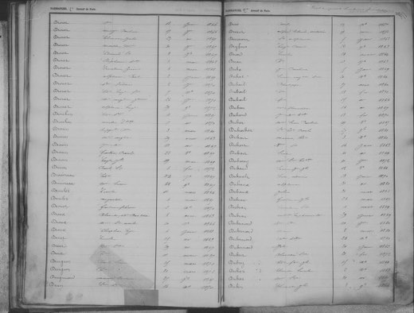
1860/1872 · Dossier administratifTables décennales des naissances, 17e arr., 1860-1872, « Destrée-Durand » : Dubart Léon 20/04/1869 ; autres Dubart 1860/1872 · Dossier administratifTables décennales des naissances, 16e arr. (Passy), 1860-1872, volume « C… à D… », p. 20 : pas de Dubart ni Dubard
1860/1872 · Dossier administratifTables décennales des naissances, 16e arr. (Passy), 1860-1872, volume « C… à D… », p. 20 : pas de Dubart ni Dubard 1860/1872 · Dossier administratifTables décennales des naissances, 16e arr. (Passy), 1860-1872, volume « R… », p. 1 : pas de Rignault (Rigaux puis Rigueault)
1860/1872 · Dossier administratifTables décennales des naissances, 16e arr. (Passy), 1860-1872, volume « R… », p. 1 : pas de Rignault (Rigaux puis Rigueault) 1er février 1862 · Acte d'état civilDécès de Marie Anne Rosalie Lépinois, Paris 10e arr., 1er février 1862 (acte n° 469)
1er février 1862 · Acte d'état civilDécès de Marie Anne Rosalie Lépinois, Paris 10e arr., 1er février 1862 (acte n° 469) 1864 · Annuaire, almanachGuide financier (A. Vitu), « Liste des agents de change près la bourse de Paris », p. 49 : Hébert (Philippe), rue Notre-Dame-des-Victoires, 14
1864 · Annuaire, almanachGuide financier (A. Vitu), « Liste des agents de change près la bourse de Paris », p. 49 : Hébert (Philippe), rue Notre-Dame-des-Victoires, 14 31 juillet 1866 · Acte d'état civilDécès de Camille Melchior Gibert, Paris 10e, acte n° 2877 du 31/07/1866
31 juillet 1866 · Acte d'état civilDécès de Camille Melchior Gibert, Paris 10e, acte n° 2877 du 31/07/1866 9 juillet 1868 · Acte d'état civilMariage Edmond Dubart × Marie Félicie Rignault, Paris 9e, acte n° 643 du 9/07/1868
9 juillet 1868 · Acte d'état civilMariage Edmond Dubart × Marie Félicie Rignault, Paris 9e, acte n° 643 du 9/07/1868 7 juillet 1868 · Acte notariéRépertoire de l'étude VI (Paul Huillier), 22 mai-31 décembre 1868, n° 452 du 7/07/1868 : contrat de mariage Dubart × Rignault
7 juillet 1868 · Acte notariéRépertoire de l'étude VI (Paul Huillier), 22 mai-31 décembre 1868, n° 452 du 7/07/1868 : contrat de mariage Dubart × Rignault 1870-1884 · Dossier administratifFichier des successions déclarées 1870-1884 (DQ7 12960), fiches « Dubart » (images 41-42)
1870-1884 · Dossier administratifFichier des successions déclarées 1870-1884 (DQ7 12960), fiches « Dubart » (images 41-42) 1871 · Dossier administratifRegistre journalier d'inhumation du cimetière du Père-Lachaise, 11/09-17/10/1871, f° 89, n° d'ordre 1870 (Dubart Louis Charles Ambroise)
1871 · Dossier administratifRegistre journalier d'inhumation du cimetière du Père-Lachaise, 11/09-17/10/1871, f° 89, n° d'ordre 1870 (Dubart Louis Charles Ambroise) 1871 · Dossier administratifRegistre journalier d'inhumation du cimetière de Montmartre, 21/11/1871-01/01/1872, décembre 1871, n° d'ordre 10529 et 10536 (Dubart née Gibert ; Dubart), concession 542
1871 · Dossier administratifRegistre journalier d'inhumation du cimetière de Montmartre, 21/11/1871-01/01/1872, décembre 1871, n° d'ordre 10529 et 10536 (Dubart née Gibert ; Dubart), concession 542 1872 · RecensementRecensement de Saint-Didier-sur-Beaujeu, 1872, agglomération
1872 · RecensementRecensement de Saint-Didier-sur-Beaujeu, 1872, agglomération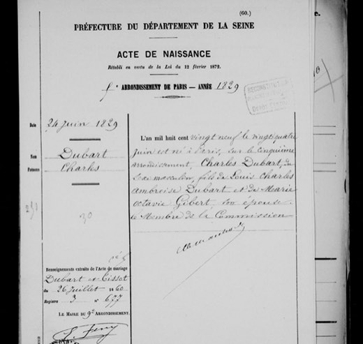
1872 · Acte d'état civilNaissance de Charles Dubart, Paris ancien 5e, 24/06/1829 : acte rétabli (loi du 12/02/1872) d'après le mariage de 1860 16 septembre 1873 · Acte d'état civilNaissance de Jeanne Augustine (Baron), Clermont-Ferrand, 16 septembre 1873
16 septembre 1873 · Acte d'état civilNaissance de Jeanne Augustine (Baron), Clermont-Ferrand, 16 septembre 1873 1873/1882 · Dossier administratifTables décennales des naissances, 17e arr., 1873-1882, « Deltheil-Dussauge » : pas de Dubart
1873/1882 · Dossier administratifTables décennales des naissances, 17e arr., 1873-1882, « Deltheil-Dussauge » : pas de Dubart 1873/1882 · Dossier administratifTables décennales des naissances, 9e arr., 1873-1882, « Desplats-Firmy » : pas de Dubart
1873/1882 · Dossier administratifTables décennales des naissances, 9e arr., 1873-1882, « Desplats-Firmy » : pas de Dubart 1873/1882 · Dossier administratifTables décennales des naissances, 8e arr., 1873-1882, « Donrémy-Friedrich » : Dubard Georges 03/03/1873 (lu 1881 par erreur le même jour)
1873/1882 · Dossier administratifTables décennales des naissances, 8e arr., 1873-1882, « Donrémy-Friedrich » : Dubard Georges 03/03/1873 (lu 1881 par erreur le même jour) 1873/1882 · Dossier administratifTables décennales des naissances, 16e arr. (Passy), 1873-1882, volume « D… », p. 2 : Dubard Marcel Jean, [14 ou 17] septembre 1876
1873/1882 · Dossier administratifTables décennales des naissances, 16e arr. (Passy), 1873-1882, volume « D… », p. 2 : Dubard Marcel Jean, [14 ou 17] septembre 1876 3 mars 1873 · Acte d'état civilNaissance de Georges Dubard, Paris 8e, acte n° 346 du 3 mars 1873
3 mars 1873 · Acte d'état civilNaissance de Georges Dubard, Paris 8e, acte n° 346 du 3 mars 1873 vers 1875 · Dossier administratifHypothèques, 1re conservation de Paris : registre indicateur DQ16 5729 (vue 22) et table du répertoire des formalités, volume 57, folios 189-191, nom Dubart
vers 1875 · Dossier administratifHypothèques, 1re conservation de Paris : registre indicateur DQ16 5729 (vue 22) et table du répertoire des formalités, volume 57, folios 189-191, nom Dubart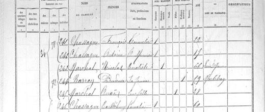
1876 · RecensementRecensement de Saint-Didier-sur-Beaujeu, 1876, agglomération 1883 · Dossier administratifFichier des successions déclarées 1870-1884, liasse « Drouineau, Henri Ernest – Dubé, Alphonse Antoine », fiche 42 (Dubart Marie Charlotte Colombe, veuve Sallé)
1883 · Dossier administratifFichier des successions déclarées 1870-1884, liasse « Drouineau, Henri Ernest – Dubé, Alphonse Antoine », fiche 42 (Dubart Marie Charlotte Colombe, veuve Sallé) 1883/1892 · Dossier administratifTables décennales des naissances, 17e arr., 1883-1892, « Dorey-Dyens » : Dubart Lucien Charles André[?], Dubart Charles Maurice
1883/1892 · Dossier administratifTables décennales des naissances, 17e arr., 1883-1892, « Dorey-Dyens » : Dubart Lucien Charles André[?], Dubart Charles Maurice 21 mai 1883 · Acte d'état civilDécès de Marie Charlotte Colombe DUBART, veuve SALLÉ, Paris 9e arr., acte n° 812 du 21/05/1883
21 mai 1883 · Acte d'état civilDécès de Marie Charlotte Colombe DUBART, veuve SALLÉ, Paris 9e arr., acte n° 812 du 21/05/1883 1883 · Dossier administratifTable alphabétique des décès du 9e arr., 01/01-09/07/1883, lettre D (renvoi à l'acte de Colombe Dubart)
1883 · Dossier administratifTable alphabétique des décès du 9e arr., 01/01-09/07/1883, lettre D (renvoi à l'acte de Colombe Dubart) 29 août 1885 · Acte d'état civilDécès de Jean Louis Alexandre RIGNAULT, Gisors, 29 août 1885 (copie du greffe)
29 août 1885 · Acte d'état civilDécès de Jean Louis Alexandre RIGNAULT, Gisors, 29 août 1885 (copie du greffe)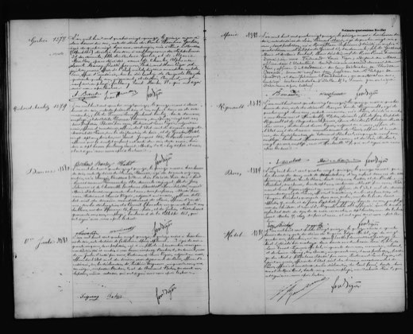
15 mars 1895 · Acte d'état civilDécès de François Émile RIGNAULT, Paris 10e arr., acte n° 1383 du 15/03/1895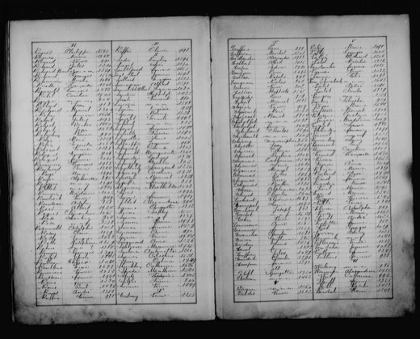
1895 · Dossier administratifTable alphabétique des décès du 10e arr., 13/02-11/04/1895, lettre R (renvoi à l'acte 1383) 26 avril 1897 · Acte d'état civilMariage Léon DUBART × Jeanne Augustine BARON MARCHAL, Tours, 26 avril 1897
26 avril 1897 · Acte d'état civilMariage Léon DUBART × Jeanne Augustine BARON MARCHAL, Tours, 26 avril 1897 15 avril 1897 · Acte d'état civilTranscription de l'arrêt d'adoption (Baron, par Marchal épouse Orsay), Tours, 15 avril 1897
15 avril 1897 · Acte d'état civilTranscription de l'arrêt d'adoption (Baron, par Marchal épouse Orsay), Tours, 15 avril 1897 15 août 1899 · Acte d'état civilDécès de Marcel Jean DUBART, Tours, 15 août 1899
15 août 1899 · Acte d'état civilDécès de Marcel Jean DUBART, Tours, 15 août 1899 1900/1904 · Dossier administratifRépertoire annuel d'inhumation du cimetière de Montmartre, 1900-1904, de « Cesselin » à « Flamant » : 13 mai 1903, Dubart Edmond
1900/1904 · Dossier administratifRépertoire annuel d'inhumation du cimetière de Montmartre, 1900-1904, de « Cesselin » à « Flamant » : 13 mai 1903, Dubart Edmond 1903 · Dossier administratifTable des successions et absences, 8e bureau (9e et 20e arr.), lettre D, 01/01/1902-31/07/1907 : mai 1903, n° 50 (Dubart Edmond)
1903 · Dossier administratifTable des successions et absences, 8e bureau (9e et 20e arr.), lettre D, 01/01/1902-31/07/1907 : mai 1903, n° 50 (Dubart Edmond) 1918 · Dossier administratifTable des décès et successions, 9e bureau de l'Enregistrement (10e, 16e, 19e arr.), lettre R, février 1918, n° 27
1918 · Dossier administratifTable des décès et successions, 9e bureau de l'Enregistrement (10e, 16e, 19e arr.), lettre R, février 1918, n° 27 1918 · Dossier administratifRépertoire annuel d'inhumation, cimetière de Montmartre, 1912-1920, n° 1058 (Dubart née Rignault, 21/02/1918)
1918 · Dossier administratifRépertoire annuel d'inhumation, cimetière de Montmartre, 1912-1920, n° 1058 (Dubart née Rignault, 21/02/1918) 1921 · Document de la famille RobertRené Dubart, 1921
1921 · Document de la famille RobertRené Dubart, 1921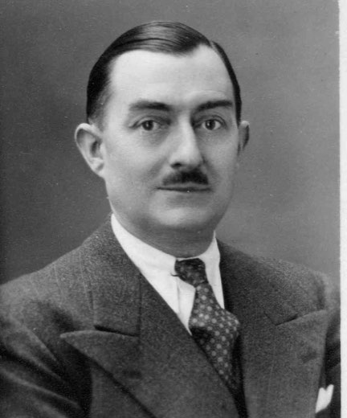
1946 · Document de la famille RobertRené Dubart, 1946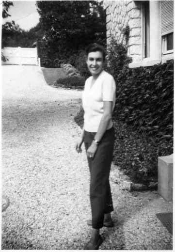
1959 · Document de la famille RobertAnnie Dubart, 1959 Document de la famille RobertRené Dubart
Document de la famille RobertRené Dubart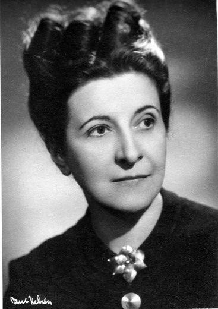
Document de la famille RobertLuce « Renée » Leblanc, épouse Dubart Document de la famille RobertLéon Dubart et Solange Gasnier
Document de la famille RobertLéon Dubart et Solange Gasnier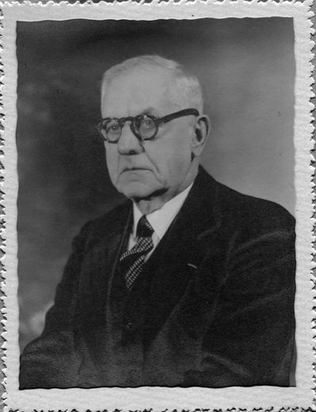
Document de la famille RobertAuguste Leblanc (identification à vérifier, d'après le nom du fichier)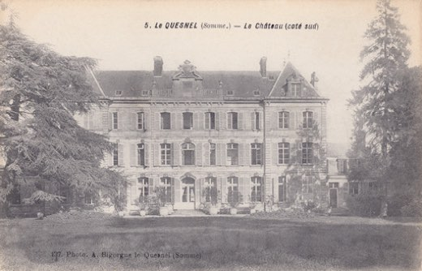
Document de la famille RobertLe château du Quesnel (carte postale)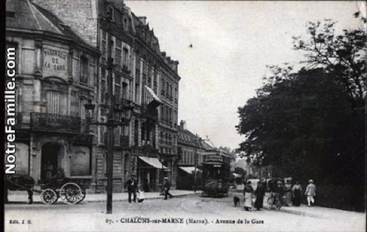
Document de la famille RobertChâlons-sur-Marne, avenue de la Gare (carte postale)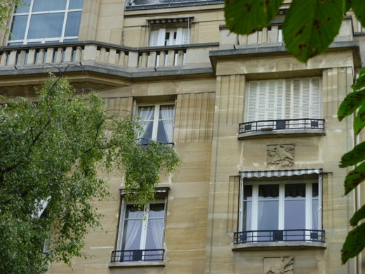
Document de la famille RobertNeuilly-sur-Seine, 20 boulevard d'Inkermann Annuaire, almanachAlmanach royal 1823, p. 849 (Contributions indirectes, Manufacture royale des Tabacs)
Annuaire, almanachAlmanach royal 1823, p. 849 (Contributions indirectes, Manufacture royale des Tabacs) Annuaire, almanachAlmanach royal 1829, p. 812 (Dép. Seine, Manufacture royale des Tabacs)
Annuaire, almanachAlmanach royal 1829, p. 812 (Dép. Seine, Manufacture royale des Tabacs) Annuaire, almanachAlmanach royal 1829, p. 203 (Caisse centrale du Trésor royal)
Annuaire, almanachAlmanach royal 1829, p. 203 (Caisse centrale du Trésor royal) Annuaire, almanachAlmanach royal 1831, p. 153 (Caisse centrale du Trésor royal)
Annuaire, almanachAlmanach royal 1831, p. 153 (Caisse centrale du Trésor royal)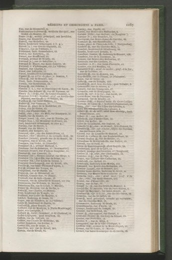
Annuaire, almanachAlmanach impérial 1864, p. 1167, « Médecins et chirurgiens à Paris » Acte d'état civilBaptême d'Alexandre RIGNAULT, Saulieu, 5 nov. 1780
Acte d'état civilBaptême d'Alexandre RIGNAULT, Saulieu, 5 nov. 1780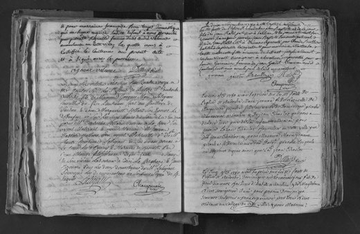
Acte d'état civilRegistre paroissial Saulieu 1780, vue 188 (baptême présenté par Pierrette Rignault, accoucheuse)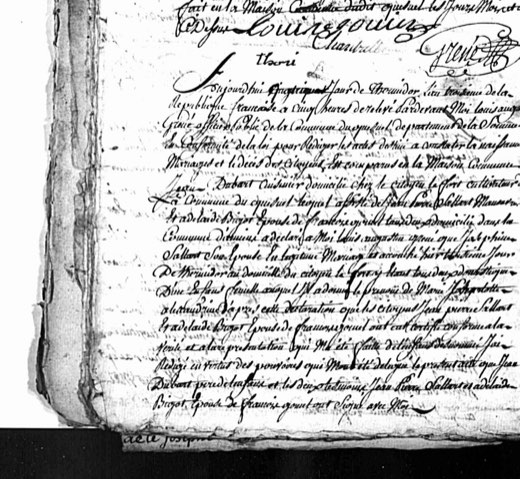
Acte d'état civilLe Quesnel, naissances an III (Marie Josèphe Charlotte Alexandrine DUBART) Acte d'état civilLe Quesnel, acte du 20 thermidor an IV (naissance Marie Valérie [?] Sophie GOUEL ; témoins Dubart et Salart)
Acte d'état civilLe Quesnel, acte du 20 thermidor an IV (naissance Marie Valérie [?] Sophie GOUEL ; témoins Dubart et Salart) Acte d'état civilLe Quesnel, naissance Marie Charlotte Colombe DUBART (1er fructidor an IV)
Acte d'état civilLe Quesnel, naissance Marie Charlotte Colombe DUBART (1er fructidor an IV) Acte d'état civilLe Quesnel, naissance Charles Alexandre Eloi DUBART (29 frimaire an VIII)
Acte d'état civilLe Quesnel, naissance Charles Alexandre Eloi DUBART (29 frimaire an VIII)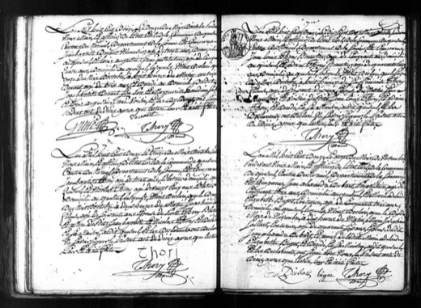
Acte d'état civilLe Quesnel, décès de Marie Josephine Sallart, 11/11/1812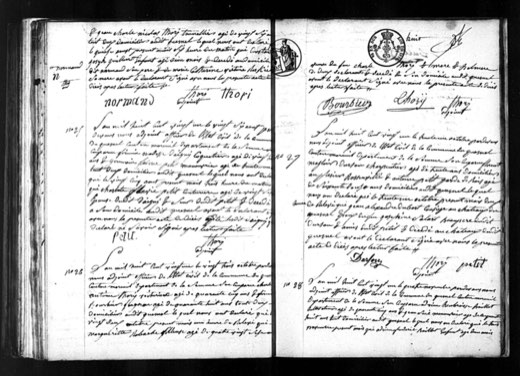
Acte d'état civilLe Quesnel, décès de Jean Alexandre Dubart, 31/10/1821 Acte d'état civilLe Quesnel, naissance de Louis Charles Ambroise Dubart, 26 brumaire an XIII
Acte d'état civilLe Quesnel, naissance de Louis Charles Ambroise Dubart, 26 brumaire an XIII Acte d'état civilLe Quesnel, registre des mariages 1815 (fin, clôture, table annuelle)
Acte d'état civilLe Quesnel, registre des mariages 1815 (fin, clôture, table annuelle)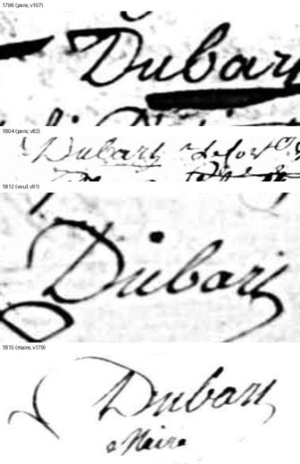
Synthèse de travail (piste, pas une preuve)Planche de comparaison des signatures « Dubart » (1796, 1804, 1812, maire 1815) Inventaire d'archivesInventaire sommaire des AD Somme, série B, p. 56 : registre B 165, extraits des contrats de mariage, 1781
Inventaire d'archivesInventaire sommaire des AD Somme, série B, p. 56 : registre B 165, extraits des contrats de mariage, 1781 Synthèse de travail (piste, pas une preuve)Planche de comparaison des signatures Dubart 1796-1815 complétée par les deux signatures de 1799 (père et témoin Antoine)
Synthèse de travail (piste, pas une preuve)Planche de comparaison des signatures Dubart 1796-1815 complétée par les deux signatures de 1799 (père et témoin Antoine)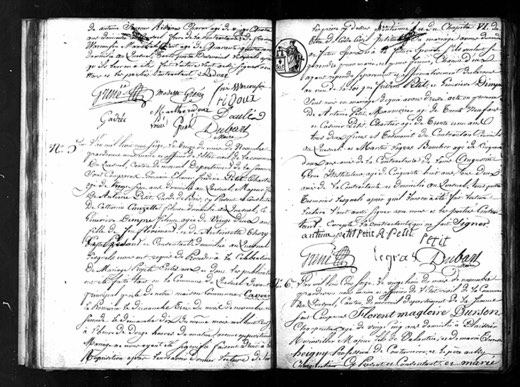
Acte d'état civilLe Quesnel, mariage Florent Magloire Durson × Charlotte Alexandrine Dubart, 28/11/1816 Synthèse de travail (piste, pas une preuve)Planche : signature du maire « Dubart, Maire » (acte n° 5, novembre 1816) et signature « Dubart » du père au mariage n° 6 (28/11/1816)
Synthèse de travail (piste, pas une preuve)Planche : signature du maire « Dubart, Maire » (acte n° 5, novembre 1816) et signature « Dubart » du père au mariage n° 6 (28/11/1816)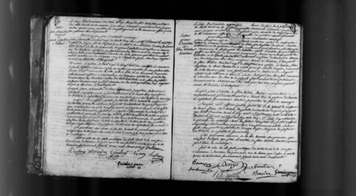
Acte d'état civilAmiens (1er arrondissement), mariage de Jean Alexandre Dubart et Marie Josephine Sallart, 11 vendémiaire an III PresseGazette des tribunaux, 13-14 juin 1836 (n° 3349), p. 4, « Sociétés commerciales » : constitution de la société E. Sallé et Dubart
PresseGazette des tribunaux, 13-14 juin 1836 (n° 3349), p. 4, « Sociétés commerciales » : constitution de la société E. Sallé et Dubart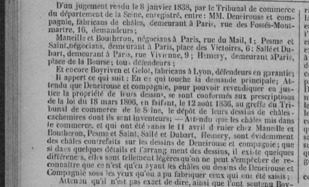
PresseGazette des tribunaux, 8 avril 1838, p. 4 : extrait du jugement du Tribunal de commerce de la Seine du 8 janvier 1838, Deneirouse et Cie contre Maneille et Boutheron, Pesme et Saint, Sallé et Dubart, Hemery PresseGazette des tribunaux, 3 octobre 1843, p. 4, « Sociétés commerciales » : dissolution de la société Sallé et Dubart
PresseGazette des tribunaux, 3 octobre 1843, p. 4, « Sociétés commerciales » : dissolution de la société Sallé et Dubart Document commercialFacture de la maison « Au Page », Hamard et Guérin successeurs de Richer et Auzouy, 3 février 1843, trousseau de Léopoldine Hugo
Document commercialFacture de la maison « Au Page », Hamard et Guérin successeurs de Richer et Auzouy, 3 février 1843, trousseau de Léopoldine Hugo Acte d'état civilFichier de l'état civil reconstitué, mariages, liasse « Dubarle 1824 – Dubas 1817 » (fiches Dubart 1827 et 1828)
Acte d'état civilFichier de l'état civil reconstitué, mariages, liasse « Dubarle 1824 – Dubas 1817 » (fiches Dubart 1827 et 1828)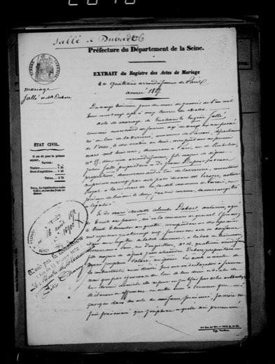
Acte d'état civilMariage Sallé × Dubart, Paris ancien 4e, 23/01/1827 : extrait du registre, état civil reconstitué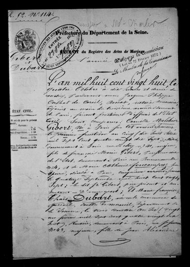
Acte d'état civilMariage Gibert × Dubart, Paris ancien 3e, 4/10/1828 : extrait du registre, état civil reconstitué Acte d'état civilDécès de Marie Octavie Gibert, Paris 9e, 10/08/1860
Acte d'état civilDécès de Marie Octavie Gibert, Paris 9e, 10/08/1860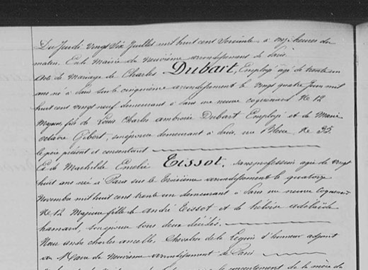
Acte d'état civilMariage Charles Dubart × Mathilde Émilie Tissot, Paris 9e, 26/07/1860 Acte d'état civilDécès de Louis Charles Ambroise Dubart, Paris 4e, acte du 14/10/1871
Acte d'état civilDécès de Louis Charles Ambroise Dubart, Paris 4e, acte du 14/10/1871 PresseGazette des hôpitaux civils et militaires, 1866, p. 359 : Académie impériale de médecine, séance du 31 juillet 1866
PresseGazette des hôpitaux civils et militaires, 1866, p. 359 : Académie impériale de médecine, séance du 31 juillet 1866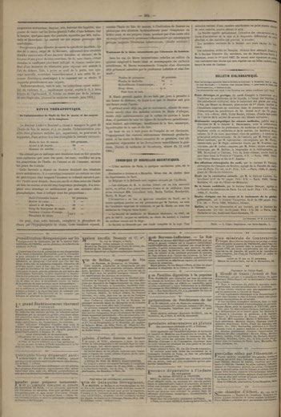
PresseGazette des hôpitaux 1866, p. 364 : chronique, obsèques du docteur Gibert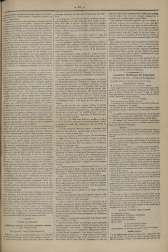
PresseGazette des hôpitaux 1866, p. 367 : discours de Tardieu aux obsèques de Gibert (séance du 7 août)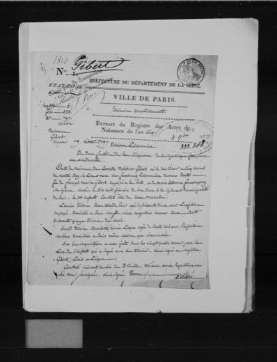
Acte d'état civilActe de naissance reconstitué de Camille Melchior Gibert, 2 fructidor an V (extrait délivré le 19/05/1808, pièces de reconstitution) Inventaire d'archivesFichier des naissances reconstituées, V3E/N 1004 : fiche Gibert Camille Melchior (an 5)
Inventaire d'archivesFichier des naissances reconstituées, V3E/N 1004 : fiche Gibert Camille Melchior (an 5)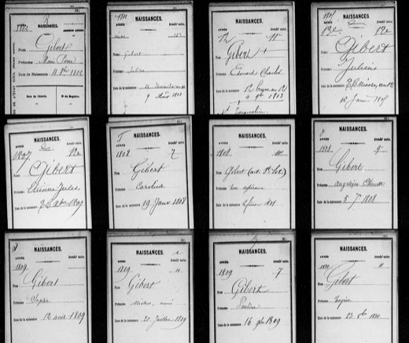
Inventaire d'archivesFichier des naissances reconstituées V3E/N 1004, sous-tranche Gibert 1802-1810 (12 fiches) : absence de Marie Octavie Dossier administratifTable des décès et des successions, 9e bureau (10e, 16e, 19e arr.), lettre G, 1865-févr. 1869 : Gibert Camille Melchior, n° 45 (juillet 1866)
Dossier administratifTable des décès et des successions, 9e bureau (10e, 16e, 19e arr.), lettre G, 1865-févr. 1869 : Gibert Camille Melchior, n° 45 (juillet 1866)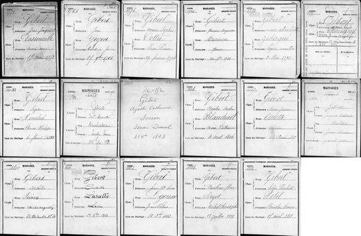
Acte d'état civilFichier de l'état civil reconstitué, mariages, liasse « Gibert » (tranches 1752-1835 en entier et 1835-1847, fiches 0-17) Acte d'état civilFichier de l'état civil reconstitué, mariages, liasse « Dubarle (1824) – Dubas (1817) », 51 fiches lues en entier
Acte d'état civilFichier de l'état civil reconstitué, mariages, liasse « Dubarle (1824) – Dubas (1817) », 51 fiches lues en entier Acte notariéRegistre des contrats de mariage de commerçants à la Chambre des notaires de Paris : MC/CM/1 (index nominatif, entrées 1-1199, avril 1829-juillet 1830) et MC/CM/15 (remises du 13 au 27/07/1868)
Acte notariéRegistre des contrats de mariage de commerçants à la Chambre des notaires de Paris : MC/CM/1 (index nominatif, entrées 1-1199, avril 1829-juillet 1830) et MC/CM/15 (remises du 13 au 27/07/1868)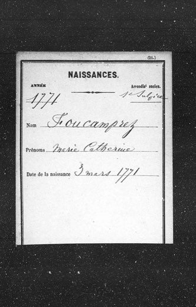
Acte d'état civilFichier de l'état civil reconstitué, naissances, liasse « Foubert (1858) – Foucard (1810) » : fiche Foucamprez Marie Catherine, 1771, Saint-Sulpice Acte d'état civilFichier de l'état civil reconstitué, décès, liasse « Foubert (1849) – Foucar (1859) » : fiche Foucamprez Marie Catherine, 14/09/1827, 5e ancien
Acte d'état civilFichier de l'état civil reconstitué, décès, liasse « Foubert (1849) – Foucar (1859) » : fiche Foucamprez Marie Catherine, 14/09/1827, 5e ancien Acte d'état civilFichier de l'état civil reconstitué, naissances, liasse « Gibeaud (1839) – Gibert (1773) » : fiche Gibert François Marin, 23/08/1751, Saint-Roch
Acte d'état civilFichier de l'état civil reconstitué, naissances, liasse « Gibeaud (1839) – Gibert (1773) » : fiche Gibert François Marin, 23/08/1751, Saint-Roch Acte d'état civilFichier de l'état civil reconstitué, décès, liasse « Gibert (1814) – Gibert (1841) » : fiches 0-50 lues (fiches de 1829 : Antoine et Marie Angélique [?], ancien 8e)
Acte d'état civilFichier de l'état civil reconstitué, décès, liasse « Gibert (1814) – Gibert (1841) » : fiches 0-50 lues (fiches de 1829 : Antoine et Marie Angélique [?], ancien 8e) Acte d'état civilFichier de l'état civil reconstitué, mariages, liasse « Dold (1859) – Dolhen (1827) » : fiches 30-50 lues (Dolhain : deux fiches des années 1830-1840)
Acte d'état civilFichier de l'état civil reconstitué, mariages, liasse « Dold (1859) – Dolhen (1827) » : fiches 30-50 lues (Dolhain : deux fiches des années 1830-1840) Acte d'état civilFichier des naissances reconstituées, tranche Gibeaud (1839) – Gibert (1773), images 26-50
Acte d'état civilFichier des naissances reconstituées, tranche Gibeaud (1839) – Gibert (1773), images 26-50 Acte d'état civilFichier des décès reconstitués, tranche Gibelly (1855) – Gibert (1814), images 0-50
Acte d'état civilFichier des décès reconstitués, tranche Gibelly (1855) – Gibert (1814), images 0-50 Acte d'état civilFichier des décès reconstitués, tranche Doléant (1818) – Dolhant (1842), images 0-50
Acte d'état civilFichier des décès reconstitués, tranche Doléant (1818) – Dolhant (1842), images 0-50 Acte d'état civilFichier des mariages reconstitués, tranche Gibert (1752) – Gibert (1835), images 0-22
Acte d'état civilFichier des mariages reconstitués, tranche Gibert (1752) – Gibert (1835), images 0-22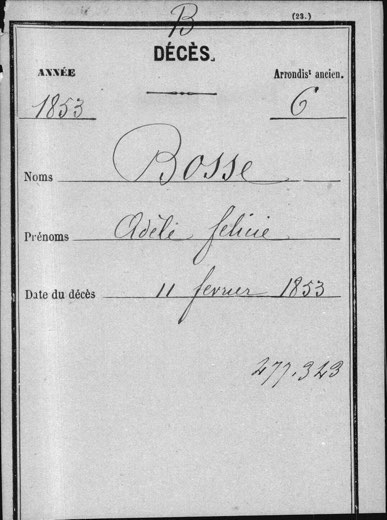
fichier · Dossier administratifFichier de l'état civil reconstitué, décès, V3E/D 156 « Bosse (1841) – Bosselet (1848) » : fiches Bosse 1849, 1853, 1859 fichier · Dossier administratifFichier de l'état civil reconstitué, naissances, V3E/N 1942 « Rignault (1803) – Rignolet (1858) » : fiches Rignault
fichier · Dossier administratifFichier de l'état civil reconstitué, naissances, V3E/N 1942 « Rignault (1803) – Rignolet (1858) » : fiches Rignault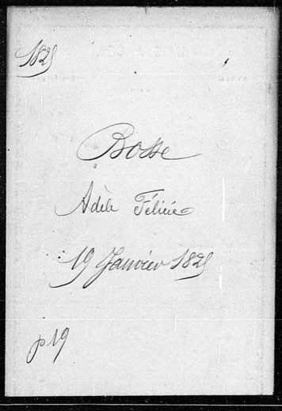
fichier · Dossier administratifFichier de l'état civil reconstitué, naissances, V3E/N 259 « Bosse (1747) – Bosse (1854) » : fiches Bosse 18?? · Acte d'état civilFiche de décès Lépinoy Jean Edouard Amélie, « 12 8bre 18?? », 6e arr. ancien
18?? · Acte d'état civilFiche de décès Lépinoy Jean Edouard Amélie, « 12 8bre 18?? », 6e arr. ancienLes autres sources, sans image
Registre des sources →Livres, sites, inventaires, actes lus en ligne sans copie conservée. Chacune a sa page, avec ce qu'elle établit.
Site web 81
- Criminocorpus, Code civil article 340 (versions)
- Wikipédia, « Louis Passy »
- Wikipédia, « Camille-Melchior Gibert »
- Altmeyer, encyclopédie de dermatologie, « Gibert, Camille Melchior »
- Wikipédia (en), « Hôtel de Ville, Tours »
- Wikipédia (en), « Le Quesnel »
- Diocèse de Paris, Notre-Dame de Bon-Secours
- Wikipédia (en), « Paris Bourse crash of 1882 »
- E. White, The Crash of 1882 and the Bailout of the Paris Bourse (NBER)
- Wikipédia (en), « Tours station »
- Wikipédia (en), « Clermont-Ferrand Cathedral »
- napoleon.org, carte des opérations militaires de la guerre de 1870-1871
- Wikipédia, « Pierre de Volvic »
- Wikipédia, « Ligne de Paris-Austerlitz à Bordeaux-Saint-Jean »
- Wikipédia, « Hôtel de ville de Tours »
- Recherche plein texte Wikipédia fr « Riom Savoie commune », « Riom Haute-Savoie hameau »
- Recherche web « Lunéville "rue des Loups" »
- CTHS, notice Gibert Camille Melchior CTHS
- en.wikipedia / FactGrid, Camille-Melchior Gibert (naissance 18 septembre)
- Wikipédia, « Théâtre du Gymnase Marie-Bell » (section Théâtre de Madame)
- Wikipédia, « Théâtre du Palais-Royal »
- Wikipédia, « Saulieu »
- Wikipédia / pages de présentation « Le Quesnel » (château, famille Le Fort, Blin de Bourdon 1853) web · -
- Geneawiki « 80652 - Le Quesnel » web · -
- AD Somme, recherche « Délibérations communales », mot « Le Quesnel » AD Somme
- Forum Le Quesnel, « histoire du CHATEAU de LE QUESNEL » forum local (lequesnel.forumactif.org)
- Site de la commune, « Château du Quesnel » Commune du Quesnel-en-Santerre
- Forum Le Quesnel, « Les armoiries, blasons de Le Quesnel » forum local
- RF Généalogie, article sur les AD de l'Oise en ligne RF Généalogie
- Wikipédia, « Louis-Alexandre Blin de Bourdon » Wikipédia
- Wikipédia, « Histoire d'Amiens » (section Révolution) Wikipédia
- Wikipédia, « Bien national » et « Émigration (1789-1815) » Wikipédia
- Geneawiki, « 80652 - Le Quesnel », section « Les maires » Geneawiki
- Vermot et Associés, vente aux enchères, lot 496 : « Exceptionnelle collection de 83 factures de Paris de 1832 à 1873 » (notice du catalogue) Vermot et Associés (maison de ventes)
- Wikipédia, « Louis-Alexandre Blin de Bourdon » Wikipédia
- CTHS, La France savante, notice GIBERT Camille Melchior (d'après Académie nationale de médecine) CTHS · id 3675
- FactGrid, Camille Melchior Gibert (Q269677) FactGrid · Q269677
- Wikidata Q2934839, Camille-Melchior Gibert (entité JSON) Wikimedia · Q2934839
- Académie nationale de médecine, recherche du site « Gibert » Académie nationale de médecine
- FranceArchives et Geneanet (recherche nominative Gibert Camille Melchior) FranceArchives ; Geneanet
- Archives de Paris : tables des décès 9e/8e bureaux 1860 et registres, accès coupé (HTTP 403) après le téléchargement de ~600 vues Archives de Paris
- Wikipédia, « David Banderali » (arrivée au Conservatoire de Paris en 1828, enseigne jusqu'en 1848, mort le 13/06/1849) Wikipédia
- Catalogue général de la BnF, notice « Paquerette ! Romance, paroles de Gustave Lemoine, musique de Melle L. Puget », A. Brullé, [1843] BnF · ark:/12148/cb43218467r
- Gallica (recherche plein texte « Mme Dubart », SRU) BnF
- HathiTrust et API Google Books (listes électorales et du jury de la Seine 1830-1848) HathiTrust ; Google
- Archives de Paris, « État civil parisien (à partir de 1860) » : sources complémentaires (pièces annexes à l'état civil : DE6 1923-1936 ; 2168W 1938-1951 seulement) Archives de Paris
- Internet Archive, recherche avancée « artistes musiciens » 1843-1862 (annuaires de l'Association des artistes musiciens) Internet Archive
- Wikipédia, « Marchand-mercier » Wikipédia
- Proantic, « La Fabrique du luxe : les marchands merciers parisiens au XVIIIe siècle » Proantic (magazine)
- Notice de libraire : « Caisse d'épargnes du C. Lafarge. Liste générale des numéros portant rentes par option », an XI livre-rare-book.com (Fabrice Teissèdre)
- Wikipédia, « Rue du Dragon » (ancienne rue du Sépulcre) Wikipédia
- Musée de La Poste, « Histoire de La Poste » (chronologie 1790-1799) Musée de La Poste
- Wikipédia, « Manufacture des tabacs du Gros-Caillou » Wikipédia
- Gallica (Almanach royal 1751 et autres) BnF
- Geneanet, relevé collaboratif des tutelles du Châtelet de Paris (AN série Y), registre Y5191B (16-30 juin 1790) 1790-06 · Archives nationales (Centre historique, Paris) · Y5191B
- data.bnf.fr, notice « Paul-César Gibert (1717-1787) » BnF · ark:/12148/cb14789180h
- Wikipédia, « Molière » (pp. 0-100 000 caractères lues) Wikipédia
- Wikipédia, « Garde-Meuble de la Couronne » Wikipédia
- Google Books (flux Atom, recherche « Gibert » + « inspecteur de la Savonnerie ») Google Books
- Geneanet, Cercle « Tables de successions DQ8 », entrée DOLHAIN Marie Jeanne AD Paris (DQ8) via Geneanet · DQ8
- FranceArchives, recherche « notaire Gibert CVIII » et « MC/ET/CVIII Gibert an V »
- Salle de lecture virtuelle des Archives nationales (SIV), accueil et page de recherche Archives nationales
- Geneawiki, « Au-delà de l'état civil - AD75 / Sous-série D6J : Registres de catholicité (doubles) déposés par l'archevêché de Paris (1791-1909) » 2026 · Geneawiki · D6J (liste des cotes 1-10018)
- Archives de Paris, page « Recensement de population » (listes nominatives seulement 1926, 1931, 1936, 1946) 2026 · Archives de Paris (site)
- Archives de Paris, page « Recrutement militaire de la Seine » (listes du contingent en ligne : classes 1859-1866 ; matricules : classe 1867 et suivantes) 2026 · Archives de Paris (site)
- Wikipédia, « Rue Beudant » 2026 · Wikipédia
- Wikipédia, « Rue Bleue (Paris) » 2026 · Wikipédia
- Wikipédia, « Rue de l'Échelle (Paris) » 2026 · Wikipédia
- Wikipédia, « Rue Taitbout » 2026 · Wikipédia
- Wikipédia, « Rue des Plantes (Paris) » 2026 · Wikipédia
- Wikipédia, « Rue du Faubourg-Poissonnière » 2026 · Wikipédia
- Wikipédia, « Rue Pigalle » 2026 · Wikipédia
- Base Mérimée PA00086010, Palais Brongniart (Bourse) : agrandissement 1899-1903, bail emphytéotique à la Compagnie des agents de change 1992 · POP / Mérimée · PA00086010
- Service des archives économiques et financières (économie.gouv.fr), pages sur les archives de la Compagnie des agents de change de Paris 2026 · économie.gouv.fr
- Gallica (BnF), moteur SRU et texte brut 2026 · Gallica
- Archives de Paris, « Recherche dans les plans parcellaires » (Atlas Vasserot 1810-1836, plan parcellaire municipal fin XIXe) : 21 planches du quartier des Tuileries listées, rue de l'Échelle non indexée 2026 · Archives de Paris (site) · F/31/73/30 à 48 ; RES/A1513/6
- Wikipédia, « Boulevard Saint-Denis » 2026 · Wikipédia
- Wikipédia, « Rue de la Pompe » 2026 · Wikipédia
- Notice HAL/RePEc halshs-01516995 : Lagneau-Ymonet, Rezaee, Riva, « Aux sources de l'histoire des professions boursières : les archives du personnel de la Compagnie des Agents de Change de Paris » (2014) 2014 · IDEAS (ideas.repec.org) · halshs-01516995
- Geneawiki, « 60471 - Noyon » (et PDF d'instruments de recherche des AD Oise) : tentative d'accès Geneawiki ; AD Oise
- Archives de Paris, « Documents retirés de la consultation (mise à jour du 21 mai 2021) » et page « Faire une recherche topographique » 2021-05-21 · Archives de Paris · D1P4 1-1709
Acte d'état civil 60
- Table décennale des mariages de Clermont-Ferrand, 1853-1862 AD Puy-de-Dôme · 7 E 113 6
- Table annuelle des naissances de Tours, 1897 AD Indre-et-Loire · 6NUM8/261/330
- Archives municipales de Lyon, état civil en ligne (mariage Orsay × Marchal, 1896 ; recensements) Archives municipales de Lyon
- Décès d'Anne Louise Angélique MARCHAL épouse ORSAY, Saint-Maurice, 26 août 1924 AD Val-de-Marne
- Mariage Jean MARCHAL × Marie Barbe BAJOT, Lunéville, 9 ventôse an II (27/02/1794) AD Meurthe-et-Moselle
- Décès Jean MARCHAL, Toul, 20/09/1822 AD Meurthe-et-Moselle
- Baptême Marie Barbe BAJOT, Lunéville, 02/08/1774 AD Meurthe-et-Moselle
- Baptême Jean Pierre BARON, Guilliers, 17/07/1781 AD Morbihan
- Mariage BARON × JAFFREDO, Pontivy (Napoléonville), 18/07/1813 ; décès 28/04/1821 et 14/08/1835 ; naissance 12 vendémiaire an IV AD Morbihan
- Registres paroissiaux de Montriond, baptêmes ~1765-1771 AD Haute-Savoie · 4E25 [?]
- Mariage FAUQUET × BAJOT, Paris, 17/11/1825 (état civil reconstitué) ; registres de Passy Archives de Paris
- Le Quesnel, tables décennales an XI-1812 (naissances, décès) AD Somme · 5MI_D49
- Le Quesnel, table décennale des mariages 1813-1822 AD Somme · 5MI_D49
- Le Plessier-Rozainvillers, table alphabétique des mariages de 1815 et clôture du registre AD Somme · 5MI_D924 (1810-1820)
- Le Quesnel, actes de naissance de juin 1813 et janvier 1814 (préambules et signatures du maire) AD Somme · 5MI_D579 (1810-1815)
- Amiens, table décennale des mariages 1793-1802 (lettre D) AD Somme · 5MI_D1133
- Le Quesnel, mariages de l'an II et naissances de 1793-an II (lecture partielle) AD Somme · 5MI_D579 (1793-1802)
- Décès de Marie Charlotte Dubart, épouse Durson, Moreuil (Somme), acte n° 20 du 4 juillet 1859 AD Somme · 5MI_D937 (Moreuil 1857-1863)
- Fiche de la table de reconstitution : mariage Rignault × Lepinoy, 21 août 1807, Paris Archives de Paris · V3E/M 876
- Fiche de la table de reconstitution : naissance de Jean Louis Alexandre Rignault, 7 janvier 1808, Paris 7e ancien Archives de Paris · V3E/N 1942
- Mariage de Jean Louis Alexandre Rignault et Adèle Félicie Bosse, Paris 6e ancien, novembre 1844 (acte rétabli en vertu de la loi du 12 février 1872) Archives de Paris (état civil reconstitué)
- Décès d'Alexandre Rignault, limonadier, Saulieu (Côte-d'Or), juin 1816 AD Côte-d'Or · FRAD021EC 584/018 (Saulieu 1809-1820)
- Décès d'Alexandre Rignault, Paris, 24 janvier 1858 (copie authentique de l'acte reconstitué, annexée à une minute notariale) Archives de Paris · 5Mi1 1542
- Fiche de la table de reconstitution : décès d'Alexis Gindre, 14 juillet 1810, Paris Archives de Paris · V3E/D 645
- Décès de Marie Joséphine Gindre, veuve Bosse, Paris 17e, acte du 10 octobre 1871 Archives de Paris · V4E 4723
- Naissance de Nicolas Marchal, Vannes (Vannes-le-Châtel, Meurthe), 12 janvier 1810 AD Meurthe-et-Moselle · Vannes-le-Châtel S. (1791-1792), N., M., D. (1793-1842)
- Naissance d'Augustine Marchal, Lorient, acte n° 90 du 10 février 1854 Lorient (état civil en ligne) · naissances 1851-1854
- Décès de Prudence Baron, épouse Marchal, Saint-Didier-sur-Beaujeu (lieu du Dépôt), 4 avril 1885 AD Rhône · 4 E 7650 (Décès 1885, Saint-Didier-sur-Beaujeu)
- Mariage de Louis Edouard Orsay et Anne Louise Angélique Marchal, Lyon 2e, 17 mars 1896 Archives municipales de Lyon · 2E1745
- Décès d'Augustine Marchal, Saint-Maurice (Val-de-Marne), acte du 23 octobre 1909 AD Val-de-Marne · 4E 3815
- Décès de Jeanne Augustine Baron Marchal, épouse Dubart, Paris 10e, 4 mai 1922 (photocopie conforme délivrée le 17/09/2012) Mairie du 10e arrondissement de Paris · non visible
- Naissance de Marie Félicie RIGNAULT, Paris 3e arr., 26/01/1847 (déclarée le 27/01/1847) : expédition de l'acte reconstitué (loi du 12/02/1872) Archives de Paris (reconstitution, Préfecture de la Seine) · Extrait déposé n° 315 869
- Décès de Charles DUBART, Paris 17e arr., 26/06/1890 (acte dressé le 27/06/1890) Archives de Paris · V4E 7490
- Décès d'Edmond DUBART, Paris 14e arr., 10/05/1903 (acte dressé le 12/05/1903) Archives de Paris · 14D 202
- Transcription au 9e arr. (26/06/1903) de l'acte de décès d'Edmond DUBART Archives de Paris · 9D 97
- Transcription (Paris 11e arr., 07/11/1917) de l'acte de décès militaire de Lucien Charles André DUBART, mort pour la France Archives de Paris · 11D 266
- Décès de Marie Félicie RIGNAULT, veuve DUBART, Paris 10e arr., 18/02/1918 Archives de Paris · 10D 368
- Naissance de Léon DUBART, Paris 17e arr., acte dressé le 20/04/1869 Archives de Paris · V4E 2064
- Table décennale 1863-1872 de l'état civil de Paris 17e arr. (naissances) : entrée « Dubart Léon 20 avr. 1869 » Archives de Paris
- Naissance d'Édouard Jean René DUBART, Paris 2e arr., acte dressé le 20/01/1900 (avec mentions marginales de mariage 1922 et de décès 1994) État civil de Paris 2e arr. (dépôt non visible sur l'image)
- Décès de Léon DUBART, Paris 15e arr., 11/05/1944 (acte dactylographié) Archives de Paris · 15D 399
- Mariage de Louis Auguste LEBLANC et Marguerite Elisabeth Marie Eléonore BELLOY, Epernay, 09/05/1900 AD Marne · 2 E 258/347
- Naissance de Luce Renée LEBLANC, Châlons-sur-Marne, 24/01/1901 (avec mention marginale de mariage 1922) AD Marne · 2 E 119/161
- Mariage d'Édouard Jean René DUBART et Luce Renée LEBLANC, Vincennes, 24/10/1922 : copie intégrale délivrée le 17/09/2012 Mairie de Vincennes (copie intégrale)
- Tables des mariages de Vincennes 1913-1922 : entrées « Dubart Edouard Jean René » et « Leblanc Luce Renée », 24/10/1922 AD Val-de-Marne
- Mariage de Léon DUBART et Solange GASNIER, Paris 12e arr., 02/06/1923 : photocopie conforme délivrée le 15/06/2011 Mairie du 12e arrondissement de Paris (copie)
- Naissance d'Annie Marguerite Jeannine DUBART, Neuilly-sur-Seine, 09/12/1930 (copie, avec mentions marginales de 1955 et 1998) Mairie de Neuilly-sur-Seine (copie, cote d'archive non visible)
- Archives de Paris, état civil reconstitué : naissance 1807-1808 et mariage Dubart × Gibert (recherche impossible sans navigateur) Archives de Paris · fichier V3E/N et V3E/M, 5Mi1 ; non identifié
- Archives de Paris, registres d'inhumation de Montmartre (sondage de fiches voisines de show/85547) Archives de Paris · non identifiée
- Acte de naissance de Marie Félicie Rignault, Paris 3e, 27/01/1847 (reconstitué) Archives de Paris (document de famille) · reconstitution loi 1872
- Acte de mariage Rignault × Bosse, 6e arr. ancien, nov. 1844 (reconstitué, abrégé) Archives de Paris (document de famille) · reconstitution loi 1872
- Fichier de l'état civil reconstitué, mariages, liasse « Foubert (1859) – Foucard (1851) », fiches 1-50 lues Archives de Paris · V3E/M 388
- Actes de l'état civil reconstitué, mariages du 02/12/1793 au 09/12/1793 (dont le 18 frimaire an II), liasse lue en entier sur planche des hauts de page 1793-12-08 · Archives de Paris · 5Mi1 2008
- Actes de l'état civil reconstitué, mariages déclassés du 11/04/1778 au 06/11/1833, liasse lue en entier sur planche 1778/1833 · Archives de Paris · 5Mi1 2339
- État civil reconstitué, décès du 02/08/1789 au 11/08/1789 Archives de Paris · 5Mi1 1128
- Actes de l'état civil reconstitué, mariages du 07/11/1804 au 19/11/1804 1804-11-07/1804-11-19 · Archives de Paris · 5Mi1 2014
- Pantin, tables décennales des naissances, des mariages et des décès, 1792-1832 (PAN 18W85) : table des naissances 1803-1812, vue 26 (lettres F-G-H) 1803/1812 · Archives départementales de la Seine-Saint-Denis · PAN 18W85 (AD093EC_NUM_000688)
- Actes de décès rétablis du 9 juin 1849 (fiches 723166-723189) : recherche de Bossé 1849 · Archives de Paris · 5Mi1 (décès 1849), fiches 723166-723189
- Actes de naissance rétablis du 27 mars au 3 avril 1851 (fiches 800352-800387) : recherche de Rignault 1851 · Archives de Paris · 5Mi1 (naissances 1851), fiches 800352-800387
- Mariages rétablis 05-22/08/1807 (fiche 736160, images 0-46, haut de page) : recherche de Rignault × Lepinoy 1807-08 · Archives de Paris · 5Mi1 2016 (fiche 736160, 47 images)
Annuaire, almanach 52
- Almanach des spectacles de Paris, 1828 : Théâtre de Madame (p. 132-133) et Gaîté (p. 208) [BnF/Gallica ? à vérifier]
- Almanach des spectacles, 1829 : Théâtre de Madame [à vérifier]
- Almanach des spectacles, 1830 : Théâtre de Madame [à vérifier]
- Annuaire des lettres, des arts et des théâtres, orchestre du Palais-Royal (en-tête « Année 1846-47 ») [à vérifier]
- Même annuaire, second volume (nom de fichier 1847) [à vérifier]
- Annuaire du département de la Somme, 1806-1820 (Gallica) BnF Gallica
- Almanach du commerce de Paris (Bottin), volumes 1822-1837 disponibles sur Gallica (1822, 1823, 1825, 1827, 1829, 1832, 1833, 1835, 1837) BnF, Gallica
- Almanach-Bottin du commerce de Paris, volumes 1838-1856 sur Gallica BnF, Gallica
- Annuaire-almanach du commerce (Didot-Bottin), volumes 1857-1871 sur Gallica BnF, Gallica
- Almanach-Bottin du commerce de Paris, 1839, liste alphabétique, p. 349 BnF, Gallica
- Almanach royal, 1824 : « Chambre des députés », p. 146 ; liste des préfets (OCR) BnF, Gallica
- Almanach-Bottin et Didot-Bottin du commerce de Paris, 1846-1864 : entrées « Gibert, médecin de l'hôpital Saint-Louis » (recherche plein texte OCR, Gallica) 1846-1864 · BnF, Gallica · cb32698036g ; cb32695639f
- Almanach royal et national pour l'an 1837, Conservatoire de musique et de déclamation, Musique vocale, Chant Internet Archive · sc_038718162_1837, djvu.txt l. 96940-96975 (p. 745-746 du volume)
- Almanach des lettres et des arts (1850) : « Dubart » pharmacien du conseil médical Internet Archive · almanachdeslettr00pari, l. 5557 et 6625
- Gallica (BnF) : Bottin 1840-1860, Annuaire des artistes, presse musicale BnF
- Almanach royal pour l'an 1829, École royale de musique et de déclamation lyrique, Classes de chant (page imprimée 694 [?]) Internet Archive (numérisation d'un volume imprimé) · sc_038718146_1829
- Annuaire des lettres, des arts et des théâtres, 1845-46 (Palais-Royal) Internet Archive · annuairedeslettr00pari
- Annuaire musical et orphéonique de France, 1875-76 Internet Archive · annuairemusicale18762coyo
- Almanach des spectacles 1828 et 1830 Internet Archive · almanachdesspec00unkngoog ; almanachdesspec07unkngoog
- Almanach national 1851 (et royal 1842, 1844, 1845 ; impérial 1855) : notaires honoraires, « Ducorps, rue Chabannais, 1 » Internet Archive
- Almanach royal, année M.DCC.LI (1751), texte OCR : « Maison de Madame la Dauphine » ; « Grands gardes et gardes des six corps des Marchands de Paris » Internet Archive (numérisation d'un exemplaire de bibliothèque ; identifiant almanachroyal1751sain)
- Almanach royal et national, 1828 (texte OCR : « Manufacture royale des Tabacs », Direction des contributions indirectes de Paris) Internet Archive (identifiant sc_038718146_1828)
- Almanach royal, année M.DCC.LXXXIX (exemplaire Univ. Ottawa), section Postes aux lettres (OCR) 1789 · Internet Archive · almanachroyalann00hour
- Almanach royal, année commune M.DCC.LXXXIX (Debure, numérisation Google), Administration générale des Postes (OCR) 1789 · Internet Archive (Google Books) · bub_gb_Ary8_3oN8fsC
- Almanach royal 1792 (Internet Archive, OCR), section Postes 1792 · Internet Archive · sc_038704226_1792
- *Almanach royal, année M.DCC.LXXXIII* (1783), rubrique « Postes aux Lettres » (Visiteurs généraux ; Caissier des Envois d'argent) Internet Archive (`almanachroyal1783adam`)
- *Almanach royal, 1784*, rubrique « Poste aux Lettres » Internet Archive (`almanachroyal1784adam`)
- *Almanach royal, 1788*, rubrique « Poste aux Lettres » Internet Archive (`almanachroyal1788sain`)
- *Almanach royal, année M.DCC.LXXXIX* (1789) : « Postes aux Lettres » ; « Maison de Madame » ; « Garde-Meuble » Internet Archive (`almanachroyalann00hour` ; second exemplaire `sc_038704226_1789`)
- *Almanach royal 1780* et *1781*, rubrique « Intendance des Postes » Internet Archive (`almanachroyal1780sain`, `almanachroyal1781sain`)
- *Almanach musical*, tome VIII, année 1783 (réimpression Minkoff, Genève) : listes « Auteurs ou compositeurs », « Maîtres de chant », « Maîtres de clavecin », « Maîtres d'accompagnement et de composition » Internet Archive via Google Books (`bub_gb_W_A5AAAAIAAJ` ; `almanachmusical00boisgoog`)
- *Almanach musical*, tomes II à V (1776-1779) : mentions « Paul-César Gibert », « M. Gibert », « Gibert, cour de l'Orangerie » Internet Archive via Google Books (`bub_gb_JyA6AAAAIAAJ`, `bub_gb_vCA6AAAAIAAJ`, `bub_gb_PyI6AAAAIAAJ`)
- *Almanach royal 1774* et *1784*, rubrique des Bâtiments du Roi (Manufactures des Gobelins et de la Savonnerie ; directeur Pierre) Internet Archive (`almanachroyal1774sain`, `almanachroyal1784adam`)
- *Almanach royal 1792* (« Directoire des Postes, Relais et Messageries ») Internet Archive (`sc_038704226_1792`)
- *Almanach national de France, an III* (1794-1795), « Agence des Postes et Messageries » ; « Service des postes pour Paris » Internet Archive (`sc_038704234_1794-1795`)
- *Almanach royal 1769*, rubrique « Garde-Meuble de la Couronne » Internet Archive (`almanachroyal1769sain`)
- Almanach impérial 1869, « Agents de change à Paris », p. 1218-1219 1869 · Internet Archive (copie numérique) · sc_038718200_1869
- Almanach impérial 1861, « Agents de change à Paris » 1861 · Internet Archive (copie numérique) · sc_038718200_1861
- Almanach national 1876, « Agents de change à Paris » 1876 · Internet Archive (copie numérique) · sc_038718219_1876
- Almanach impérial 1870, « Agents de change à Paris » 1870 · Internet Archive (copie numérique) · sc_038718200_1870
- Almanach national 1885-1886, « Agents de change à Paris » (Blin, rue Taitbout 5 ; agents honoraires) 1885/1886 · Internet Archive (copie numérique) · sc_038718219_1885-1886
- Almanach national 1891, « Agents de change à Paris » (absence de Hébert) 1891 · Internet Archive (copie numérique) · sc_038718219_1891
- Almanach national 1902, « Agents de change à Paris » (Brisset — Blin, rue Taitbout 5) 1902 · Internet Archive (copie numérique) · sc_038718219_1902
- Annuaire des lettres, des arts et des théâtres, 1845-1846 : Renault (Hip.), arch. exp., rue Bleue, 35 1845/1846 · Internet Archive (copie numérique) · annuairedeslettr00pari
- Mémoires de la Société des ingénieurs civils de France, liste des membres : Geyler et Huet, rue Bleue, 35 1862 (métadonnée IA) · Internet Archive (copie numérique) · mmoires64frangoog
- Paris charitable et prévoyant, 1897 : Hôpital de Notre-Dame de Bon Secours, rue des Plantes, 66 (extrait de moteur Internet Archive non ouvert) 1897 · Internet Archive (copie numérique) · BIUSante_22696x01
- Almanach national : annuaire officiel de la République Française pour 1892, liste des inspecteurs généraux des Ponts et chaussées 1892 · Internet Archive (Bibliothèque nationale) · sc_038718219_1892
- Agenda musical pour l'année 1837 (« contenant les noms et demeures » des artistes), rubrique « DAMES PROFESSEURS. Piano, Harpe, Guitare, Solfège, Chant, Harmonie », p. 195 imprimée 1837 · BnF, Gallica
- Annuaire général du commerce… ou Almanach des 500 000 adresses, 1840 (deux exemplaires) et 1844 : liste alphabétique à l'endroit de « Dubart » ; recherche plein texte « Dubart » 1842-1845 1840-1845 · BnF, Gallica
- Annuaire de l'Association des artistes musiciens, volumes 1844-1875 : listes des sociétaires (recherche plein texte « Dubart » dans chaque volume ; lignes relues en OCR pour 1844, 1847, 1848, 1851) 1844-1875 · BnF, Gallica
- Almanach du commerce de Paris / Répertoire du commerce 1828, 1829, 1835, 1837 et Almanach-Bottin 1838, 1839 : recherche plein texte « Dubart » 1828-1839 · BnF, Gallica
- Annuaire-almanach du commerce (Didot-Bottin), 1862, Paris : listes alphabétique, par professions et par rues (Vivienne, Colbert) 1862 · Internet Archive (exemplaire Univ. de Toronto) · 1862bottin01pariuoft
Livre, ouvrage 46
- Encyclopédie Larousse, « paternité »
- Wikipédia fr, « Pontivy » (version du 28/10/2026)
- Wikipédia fr, « Lunéville »
- Wikipédia fr, « Mont-Blanc (département) »
- Wikipédia fr, « Montriond »
- A. Revier, « Le métier de perruquier au siècle des Lumières », Actes du 127e congrès CTHS (Nancy 2002), 2006, p. 197-203 Persée
- Wikipédia fr, « Vannes-le-Châtel »
- G. Maistre, « Les anciennes migrations savoyardes », *Hommes et Migrations* n°1166, 1993, p. 10-17 Persée
- Wikipédia fr, « Passy (Seine) »
- Wikipédia fr, « Passy (Yonne) »
- Wikipédia fr, « Manutention civile »
- E. Gilles (éd.), J. Pommier, « Le pays de Pontivy en 1830 — Essai sur la topographie physique et médicale de la ville de Pontivy », *Annales de Bretagne* t. 31 n°4, 1916, p. 463-486 Persée
- D. K. Holoman, Société des Concerts du Conservatoire 1828-1967, liste du personnel (R)
- Les souterrains-refuges du Quesnel (Bull. Soc. préhist. française, 1932) Persée
- Chatenet-Calyste, « Soigner une maison aristocratique à la fin du XVIIIe siècle : la princesse de Conti », Histoire, médecine et santé, 2012 OpenEdition
- Ledieu, Moreuil et son canton, 1889 ; abbé Leroy, Le Quesnel et Saint-Mard en Chaussée, 1923
- Abbé Maurice Leroy, Le Quesnel et Saint-Mard-en-Chaussée : faits de guerre et données historiques, 1923 BnF Gallica
- F.-I. Darsy, Les doléances du peuple et les victimes : souvenirs de la Révolution en Picardie, 1887 BnF Gallica
- Recueil des arrêts du Conseil, ou ordonnances royales rendues en Conseil d'État, année 1846, p. 268 : ordonnance du 1er mai 1846, Sallé et Dubart (n° 18,467-18,472) BnF, Gallica
- Bulletin des lois, 1852, p. 372 : statuts de la Fraternelle, conseil général des sociétaires du 26 août 1851 BnF, Gallica
- Guyot, Statistique des lettres et des sciences en France, 1834-1835 (entrée Gibert, médecin) non localisé
- C.-M. Gibert, Considérations sur l'hippocratisme et l'anatomisme (extrait de la Revue médicale, juin 1833), avec « Titres du Dr Gibert (Camille-Melchior), né à Paris le 18 août 1797 » Wellcome Library via Internet Archive · b30374637
- C.-M. Gibert, Traité pratique des maladies spéciales de la peau, 2e éd., Paris, Germer Baillière, 1839 : page de titre et avant-propos Wellcome Library via Internet Archive · b28749698
- A. Elwart, Histoire de la Société des concerts du Conservatoire impérial de musique, 1864 Internet Archive · histoiredelasoci00elwa
- Ch. Dancla, Notes et souvenirs, 1893 Internet Archive · notesetsouvenir00dancgoog
- Encyclopédie, 1re éd., t. 3 (1751), article « Commensaux » (Boucher d'Argis), p. 689 Wikisource (transcription)
- P. Verlet, « Le commerce des objets d'art et les marchands merciers à Paris au XVIIIe siècle », Annales ESC 13-1, 1958, p. 10-29 Persée
- G. Thuillier, Une ténébreuse affaire : la Caisse Lafarge (1787-1892), Comité d'histoire de la sécurité sociale, 1999, 890 p. ; compte rendu M. Dorigny, Dix-huitième siècle n° 32 (2000), p. 637-638 Persée (notice du compte rendu)
- G. d'Avenel, « Le Port des lettres depuis sept siècles », Revue des Deux Mondes, 6e période, t. 22, 1914, p. 138-164 Wikisource
- M. Du Camp, « Les Manufactures de Tabac : les établissemens du Gros-Caillou et de Reuilly », Revue des Deux Mondes, 2e période, t. 76, 1868, p. 709-741 Wikisource
- Almanach royal 1778 (texte OCR), sections Postes et Visiteurs généraux Internet Archive (exemplaire Boston Public Library)
- Almanach royal 1789 (texte OCR), direction des Manufactures royales Internet Archive (exemplaire Univ. Ottawa)
- Henry Havard et Marius Vachon, *Les Manufactures nationales : les Gobelins, la Savonnerie, Sèvres, Beauvais*, Paris, 1889, chapitre « La Savonnerie » (pp. 311-321 environ) Internet Archive (exemplaire Univ. d'Ottawa, `lesmanufacturesn00hava`)
- Jean Monval, *Correspondance de Soufflot avec les directeurs des Bâtiments concernant la manufacture des Gobelins (1756-1780)*, thèse, Paris, Lemerre, 1918 (édition de lettres des AN, O1 2044, O1 *2048, O* 1554) Internet Archive (exemplaire Univ. de Toronto, `correspondancede00soufuoft`) · AN O1 *2048 (lettre de 1777)
- Jean Monval, *Soufflot : sa vie, son œuvre, son esthétique (1713-1780)*, Paris, Lemerre, 1918, chapitre sur les Gobelins et la Savonnerie Internet Archive (`soufflotsavieson00monduoft`)
- Alfred Lacordaire, *Notice historique sur les manufactures impériales de tapisseries des Gobelins et de tapis de la Savonnerie*, Paris, 1853 (1re éd.) Internet Archive (`noticehistorique00laco`)
- *Encyclopédie* (1re éd.), article « Tapissier » Wikisource (transcription)
- Pierre Verlet, *The Savonnerie : its history, the Waddesdon Collection*, 1982 ; Madeleine Jarry, *The Carpets of the Manufacture de la Savonnerie*, 1966 Internet Archive (prêt contrôlé : `savonnerieitshis0000verl`, `bwb_P9-CDQ-271`)
- Bulletin de la Société mathématique de France, t. 16, liste des membres : Bischoffsheim, banquier, rue Taitbout, 3 vers 1887-1888 · Internet Archive (copie numérique) · bulletinsoci16soci
- Explication des ouvrages de peinture [...] Salon de 1870 : Margarita (Antonio), rue Beudant, 19 1870 · Internet Archive (copie numérique) · explicationdesou1870soci
- Encyclopédie municipale de la Ville de Paris, 1902 : Hôpital de Notre-Dame de Bon-Secours, rue des Plantes, 66, fondé par l'abbé Carton (extrait de moteur non ouvert) 1902 · Internet Archive (copie numérique) · encyclopedie-municipale-de-la-ville-de-paris
- Catalogue général officiel de l'Exposition de 1900 : Notre-Dame-de-Bon-Secours, rue des Plantes, 66 (extrait de moteur non ouvert) 1900 · Internet Archive (copie numérique) · cataloguegeneral18expo
- Auguste Doniol, Histoire du XVIe arrondissement de Paris (notice « Rue de la Pompe », pp. 55-59 environ) 1902 · Internet Archive (copie Google) · histoireduxviea00donigoog
- Liste de messieurs les représentants à l'Assemblée nationale par ordre alphabétique et par départements (août 1871) 1871-08 · Internet Archive (UBC) · listedemessieurs00fran
- J. Grenet, Boulogne, son histoire et ses institutions (Paris, Schiller, avril 1869) 1869-04 · Internet Archive (Harvard) · bub_gb_RS4bAAAAYAAJ
- Archives de la Somme, « Listes des maires de 428 communes du département de la Somme (1790-2024) » (Supplément au Dictionnaire du personnel politique de la Somme), notice Le Quesnel 2024 · archives.somme.fr · PDF media 823a55fd-8d23-4b78-a95b-63d9862c9ad6
Presse 25
- L'Illustration n°1595, 20 septembre 1873 (Projet Gutenberg) 1873-09-20
- Boulogne News and Boulogne Gazette, 5 juin 1849, p. 3 (annonce répétée jusqu'au 14 août 1849) BnF, Gallica
- Le National, 19 octobre 1871, p. 4 ; La Presse, 20 octobre 1871, p. 3 ; Journal des débats, 19 octobre 1871, p. 4 : listes des décès BnF, Gallica
- Le Petit Marseillais, 12/04/1929, p. 5 : avis de remerciements pour le décès de M. Eugène RIGNAULT (capture Retronews) Retronews (BnF)
- Revue et gazette musicale de Paris, n° du 24/03/1839 : « Madame Dubart et M. Deshayes » (H. Blanchard) Internet Archive (numérisation d'un volume imprimé) · revueetgazettemu18396pari, djvu.txt l. 17159-17187
- Le Ménestrel, volume 1837-1843 (étiqueté « 1833 » par l'Archive) : mentions de Mme Dubart, 1839-1843 Internet Archive · lemnestrel26810pari, djvu.txt l. 35840 à 127520
- Revue et gazette musicale de Paris, vol. 1840 : concerts de mars-avril et Senlis (nov. 1840) Internet Archive · revueetgazettemu18407pari, l. 30574, 33885, 37660, 92356
- Revue et gazette musicale de Paris, vol. 1841 : soirée Traullé (vers 10/01/1841) Internet Archive · revueetgazettemu18418pari, l. 4783
- Revue et gazette musicale de Paris, vol. 1846 : soirée Dubart-Manera (début 1846) Internet Archive · revueetgazettemu1846pari, l. 8865-8880
- Revue et gazette musicale de Paris, vol. 1848 : matinée Romagnesi (vers janvier 1848) Internet Archive · revueetgazettemu1848pari, l. 6267
- Retronews : presse parisienne 1839-1860, annonces de cours de chant BnF/Retronews
- Revue et gazette musicale de Paris, n° 24 du 17/06/1849 : nécrologie de Banderali (non signée) Internet Archive · revueetgazettemu1849pari, djvu.txt l. 36395-36440
- Revue et gazette musicale de Paris, 1842-1843 : mentions d'élèves de Banderali (Flamand 30/01/1842, Vauchelet 06/11/1842, etc.) Internet Archive · revueetgazettemu18429pari l. 7972, 74140 ; revueetgazettemu1843pari l. 12485, 46962
- Revue et gazette musicale de Paris, volumes 1836, 1838, 1842-1845, 1847, 1849-1852, 1855-1860, recherche plein texte « Dubart » et « Gibert » sans résultat (liste exacte dans transcriptions.md C4) Internet Archive · revueetgazettemu18363pari, bub_gb_sr5CAAAAcAAJ, …18429pari, …1843pari à …1845pari, bub_gb_T71CAAAAcAAJ, …1847pari, …1849pari, bub_gb_y71CAAAAcAAJ, …1851pari, …1852pari, …1855pari à …1860pari
- Le Ménestrel, volumes 26 et 27 (nov. 1858-oct. 1860), dont les numéros d'août 1860 (pp. 281-312) : recherche « Dubart » sans résultat Internet Archive · lemnestrel26pari, lemnestrel27pari
- Gallica (BnF) : recherche plein texte « Madame Dubart » / « Gibert », Ménestrel 1843-1858, Journal des débats, La Presse, Le Corsaire, France musicale, Courrier des théâtres, Bottin BnF
- Retronews : presse parisienne 1815-1860 BnF/Retronews
- Le Ménestrel, 1837-juillet 1843 (volume relié) Internet Archive · lemnestrel26810pari
- Revue et gazette musicale de Paris, 1839 (vol. 6) Internet Archive · revueetgazettemu18396pari
- Revue et gazette musicale de Paris, 1840 (vol. 7) Internet Archive · revueetgazettemu18407pari
- Revue et gazette musicale de Paris, 1842 (vol. 9) Internet Archive · revueetgazettemu18429pari
- Revue et gazette musicale de Paris, 1845, 1846, 1852, 1855, 1857 Internet Archive · revueetgazettemu1845pari ; …1846pari ; …1852pari ; …1855pari ; …1857pari
- Le Ménestrel, 5 mars 1843 (annonce de la matinée de Mme Dubart, rue Chabannais 1) Internet Archive · lemnestrel26810pari
- Le Ménestrel v. 28-40 (nov. 1860-1874) et Revue et gazette musicale 1850, 1853, 1854, 1861-1872 : textes OCR complets lus (recherche Dubart et variantes) ; Annuaire des artistes (Lacroix) 1860-1862 Internet Archive
- Gazette des tribunaux, échantillon de 20 numéros (6/10/1843-26/01/1844, 10/01/1845), couche texte des PDF ENAP
Inventaire d'archives 24
- « État de la consultation de l'état civil » (mise à jour 12/2024) AD Morbihan
- Geneanet, fiche de registre « Montriond (Haute-Savoie) — baptêmes 1717-1797 » / « [AD 4E25] Montriond 1717-1790 » Geneanet · AD 4E25 [?]
- « Panorama des recensements de population » (2024) AD Morbihan
- AD Somme, tables des successions et absences (formulaire de recherche) AD Somme · cote non donnée
- AD Somme, archives notariales (formulaire de recherche) AD Somme · 3E (selon le site)
- AD Somme, cadastre napoléonien (formulaire de recherche) AD Somme · cote non donnée
- AD Oise, registres paroissiaux d'Élincourt-Sainte-Marguerite AD Oise · non établie
- Inventaire sommaire des AD Somme antérieures à 1790, t. I, série B, Présidial d'Amiens, saisines 1784-1785 AD Somme (imprimé, 1883) · 1 B 47
- Même inventaire, t. I, saisines 1771-1774 (dame Lefort, veuve du seigneur du Quesnel) AD Somme (imprimé, 1883) · 1 B 45
- Inventaire sommaire des AD Somme antérieures à 1790, t. IV, série C : rôles de supplément sur les privilégiés, 1789 AD Somme (imprimé, 1883) · C 2193
- Notices SIV : notaire Achille Descours (FRAN_NP_012407, étude CXI, 25/07/1846-11/09/1860, 1 rue de Provence) ; minutes Huillier (FRAN_IR_041232, MC/ET/VI/1220) Archives nationales (SIV) · FRAN_NP_012407 ; FRAN_IR_043312 ; FRAN_IR_041232
- Salle des inventaires virtuelle des Archives nationales : recherche « Dubart » dans les inventaires du Minutier central (46 résultats) Archives nationales (SIV)
- O. Cottarel (dir. O. Krakovitch), « Tontines d'épargne : administration des tontines, caisse d'épargne et de bienfaisance (Caisse Lafarge), Caisse des employés et artisans », répertoire numérique F/22/685-1037, 1992 Archives nationales (Pierrefitte-sur-Seine) · F/22/*685-1037
- Tables de successions et absences (DQ8), Enregistrement de Paris Archives de Paris · DQ8
- Relevé collaboratif Geneanet « Actes cités dans les répertoires des notaires parisiens » (projet Familles parisiennes), fiche : Notaire GIBERT Guillaume, inventaire, 24/11/1796, Gibert × Dolhain Marie Jeanne 1796-11-24 · Archives nationales, Minutier central (répertoire de l'étude CVIII) via Geneanet · RE/CVIII/18
- Index collaboratif Geneanet (panneau « Noms ») des pages 196 et 197 de AN Y5158B : GIBERT Paul César, François, Charles César, Jean Baptiste, Louis Armand 1787-10-19 · Archives nationales via Geneanet · Y 5158B
- Index collaboratif Geneanet (panneau « Noms ») de la page 390 de AN Y5191B : six individus (Gibert, Dolhain) 1790-06-22 · Archives nationales via Geneanet · Y 5191B
- Relevé collaboratif Geneanet « Actes cités dans les répertoires des notaires parisiens », fiche : Notaire PICQUAIS Guillaume Henri, inventaire, 23/10/1787, GIBERT Paul Cesar + 1787-10-23 · Archives nationales, Minutier central (répertoire de l'étude LVI) via Geneanet · RE/LVI/14
- Relevé collaboratif Geneanet 6182, fiche : notaire Billard Paul Alphonse, mariage DANINI Jean Baptiste Louis × GIBERT Genevieve Christine, 05/09/1793 1793-09-05 · Archives nationales, Minutier central (via Geneanet 6182) · RE/LXXIV/3
- Relevé collaboratif Geneanet 6182, fiche : notaire Garcerand Charles, mariage LEGRAND Jean Pierre × GIBERT Geneviève, 16/04/1765 1765-04-16 · Archives nationales, Minutier central (via Geneanet 6182) · RE/XC/7
- Relevé collaboratif Geneanet 6182, fiches : mariage GIBERT Jean Baptiste × RAISON Marie Geneviève, 22/05/1776 (RE/XCI/10, notaire Baron) et inventaire GIBERT Jean Baptiste, 10/01/1785 (RE/XCI/12, notaire Lefebvre) 1776-05-22/1785-01-10 · Archives nationales, Minutier central (via Geneanet 6182) · RE/XCI/10 ; RE/XCI/12
- Relevé collaboratif Geneanet 6182, fiches : mariages GIBERT François × MEUNIER (1747), × JOUANET (1756), × LAURENT (1766), × INCELIN (1755) 1747/1766 · Archives nationales, Minutier central (via Geneanet 6182) · RE/XCIII/1 ; RE/XXVIII/8 ; RE/LXXXI/9 ; RE/XXX/5
- Relevé collaboratif Geneanet 6182, fiches : inventaire GIBERT Guillaume + (1756, RE/LXVI/9) ; partage 1807 citant GIBERT Guillaume Toussaint (RE/CVIII/22) 1756/1807 · Archives nationales, Minutier central (via Geneanet 6182) · RE/LXVI/9 ; RE/CVIII/22
- Tables de successions et absences (DQ8), fiches GIBERT François Marin, Geneviève, François, Jean Baptiste (cercle Geneanet colgnecmfrancedq8) Archives de Paris (DQ8) · DQ8
Dossier administratif 8
- Fichier des électeurs de Paris 1860-1870, liasse « Dietrich, Isidore – Dubois Dubey, Auguste », fiches Dr… à Dub… (vues 66-99) 1860-1870 · Archives de Paris · D4M2 3
- Table des successions et absences (Enregistrement), 1re partie, page 142 (Ol-Oz), bureau apparemment d'Etampes : Orsay Louis Edouard, 1903 Enregistrement (cote d'archives non visible)
- Fichier des successions déclarées 1858-1899, DQ7 12885 (Gibaud-Giblet) : absence de Camille Melchior et de Marie Octavie Gibert Archives de Paris · DQ7 12885
- Base Léonore, recherche nom Gibert (63 légionnaires) et Gibert + Camille / Melchior Archives nationales · base Léonore (LH)
- Archives historiques Société générale : présentation des fonds (PDF, 5 p.) Société générale (site)
- Table des décès et successions, 9e bureau, lettre D, février 1918 (images 115-118) : lecture des noms, aucun Dubart 1918 · Archives de Paris · DQ8 2917
- Fichier des successions déclarées 1870-1884 (DQ7 12970), fiches « Gibert » (images 40-50) 1870-1884 · Archives de Paris · DQ7 12970
- Listes électorales de Paris, AD75 série VD6, volumes indexés sur Geneanet (VD6/84, 85, 196, 275, 629 ; 1828, 1830-1831, 1846-1847, 1857-1863) 1828-1863 · Geneanet (images et index collaboratif) · VD6/84, VD6/85, VD6/196, VD6/275, VD6/629
Registre paroissial 8
- Baptême de Jean, fils de Charles Dubar et Catherine Molin, Elincourt-Sainte-Marguerite, 25 décembre (année non lue) AD Oise · ELINCOURT-SAINTE-MARGUERITE BMS 1631 juin - 1691 janvier
- Sépulture de Jean Dubart, cordonnier, Elincourt-Sainte-Marguerite, 15 septembre 1756 AD Oise · ELINCOURT-SAINTE-MARGUERITE BMS 1750-1792
- Baptême de Jean Alexandre Dubart, Elincourt-Sainte-Marguerite, 26 avril 1759 AD Oise · ELINCOURT-SAINTE-MARGUERITE BMS 1750-1792
- Naissance et baptême à la maison de Marie Josephine Sallart, Hédauville (registre de Senlis-le-Sec), 22 septembre 1766 AD Somme · 5MI_D1011 (Senlis-le-Sec Saint-Martin : baptêmes, mariages, sépultures)
- Sépulture de Fermin Sallart, laboureur, Hédauville, 17 mars 1787 AD Somme · 5MI_D1011 (Senlis-le-Sec Saint-Martin)
- Table des mariages célébrés à la paroisse Notre-Dame-de-Bonne-Nouvelle (Paris), 1803-1820 (libellé Geneanet « Tables décennales (Mariages) ») : GIBERT François Marin × FOUCAMPRER Marie Catherine, 17/11/1804 1804-11-17 · Archives de Paris (numérisation Geneanet) · D6J 1209
- Table des baptêmes de Notre-Dame-de-Bonne-Nouvelle, 1797-1819 (libellé Geneanet « Tables décennales (Naissances) ») 1797/1819 · Archives de Paris (numérisation Geneanet) · D6J 3196
- Table des baptêmes de Notre-Dame-de-Bonne-Nouvelle, 1797-1819 (libellé Geneanet « Tables décennales (Naissances) »), vues 107-114 relues à fort grossissement : n° 63 de 1808, « Gibert, Mᵉ octavie », 4 février 1807-07/1808-03 · Archives de Paris (numérisation Geneanet) · D6J 3196
Document de famille 7
- Copie familiale de la transcription de l'adoption (« Adoption Baron Marchal 1897.pdf »)
- Faire-part de décès de Madame Léon Dubart, née Jeanne Augustine Orsay-Marchal (imprimé, Administration spéciale des Funérailles, Maison Henri de Borniol) Famille Robert
- Faire-part de mariage de Mademoiselle Augustine Baron et Léon Dubart, envoyé par M. et Mme Edouard Orsay, Tours, 27 avril 1897 Famille Robert
- Faire-part de mariage de Léon Dubart et Mademoiselle Augustine Baron, envoyé par M. et Mme Edmond Dubart, Paris (3 rue Taitbout), 27 avril 1897 Famille Robert
- Faire-part de décès de Madame veuve DUBART née Marie RIGNAULT, 18/02/1918 (imprimé, bordure noire) Famille Robert (documents reçus le 02/11/2026)
- Témoignage de Jessica (propriétaire du projet, famille Dubart) : l'époux de Thaïs Dubart est le dermatologue Camille-Melchior Gibert 2026-11-02 · Mémoire familiale
- Déclaration de Jessica (03/11/2026) : la profession « professeur de chant » d'Octavie vient de la famille ; on ne sait pas comment l'information a été obtenue 2026-11-03
Synthèse de travail (piste, pas une preuve) 7
- dossier/zones-d-ombre.md (agent généalogiste, 27/10/2026)
- dossier/contexte-historique.md (agent historien, 27/10/2026)
- Calcul de concordance calendrier républicain / grégorien
- Dossier ChatGPT sur Louis Charles Ambroise Dubart, transmis par Jessica Jessica (copie)
- Résumés de moteur de recherche (Archives parlementaires du 3 mars 1791, Cambridge JEH « Tontines, public finance and revolution », Heraldica « Maison du Roi », thèse Maget 2010) divers
- Piste ChatGPT : index des tutelles du Châtelet (22/06/1790, AN Y5191B) citant Jean Baptiste Gibert, caissier des postes, et François Gibert × Marie Jeanne Dolhain 2026-11-08
- Résumé de moteur de recherche renvoyant aux *Archives parlementaires* (Persée) sur la liquidation des offices de la Maison du Roi, 1790-1791 Persée
Base collaborative 5
- Gallica (presse, almanachs, Bottin), Geneanet, FamilySearch BnF / privés
- Gallica, recherche plein texte (Gibert / Foucamprez / Bosse) BnF
- Léonore, dossier Légion d'honneur Gibert Camille Melchior Archives nationales · LH/?
- Base Léonore, dossier Légion d'honneur de Gibert Camille Melchior Archives nationales · LH/… non connue
- Base Léonore, dossier Légion d'honneur de Gibert Camille Melchior (2e tentative : API de recherche) Archives nationales · cote inconnue
Dossier militaire 5
- Registre matricule de Léon DUBART, classe 1889, n° matricule 1452, 9e arr. de Paris Archives de Paris (registres matricules)
- Registre matricule de René DUBART, classe de mobilisation 1919 [?], n° matricule 245, liste du 10e arr. de Paris Archives de Paris (registres matricules)
- Registre matricule d'André Émile François RIGNAULT, classe 1907, n° matricule 1389 Archives (dépôt non visible sur l'image)
- Registre matricule de Louis Auguste LEBLANC, classe 1896, n° matricule de recrutement 1067 [?] AD Marne · 1 R 1217
- Registre matricule d'Auguste BELLOY, né en 1853, classe 1873 (4 vues d'une même fiche) AD Ardennes · 1 R 018
Recensement 3
- Recensement de Saint-Didier-sur-Beaujeu, 1876, population éparse 1876 · AD Rhône · 6 M 271
- Recensement de population, Tours [?], 1896 [?] : ménage Orsay (bandeau) AD Indre-et-Loire · 6NUM5/261/023
- Dénombrement de la population de Châlons-sur-Marne, 1901 (extrait, ménage LEBLANC) AD Marne · 122 M 289
Texte de loi 3
- Code civil des Français (1804), livre I, titre VIII, articles 343 à 359 (Wikisource) 1804
- Code civil des Français (1804), livre I, titre VII, article 340 (Wikisource)
- *Archives parlementaires*, t. XXXI, p. 196 : décret relatif aux infirmes et vieillards de la gendarmerie logés dans les casernes de Lunéville, séance du 22/09/1791 Persée (ARCPA)
Acte notarié 2
- Minutier central, répertoires des notaires parisiens 1825 (contrat FAUQUET × BAJOT éventuel) Archives nationales · MC/RE
- Répertoire de l'étude CXI (Descours puis Marcq), 9 juillet-environ 2 novembre 1860, parcouru pour un inventaire Dubart/Gibert 1860 · Archives nationales, Minutier central · MC/RE/CXI/18
Jugement 2
- Avis de parents (tutelle) des mineurs Gibert, Châtelet de Paris, 22 juin 1790 (AN Y5191B, vue 390) 1790-06-22 · Archives nationales (numérisation Geneanet) · Y 5191B (tutelles 16-30/06/1790)
- Avis de parents (tutelle) des mineurs Gibert, reçu par notaires le 12/10/1787, présenté au lieutenant civil du Châtelet (AN Y5158B, vues 196-198) 1787-10-12 · Archives nationales (numérisation Geneanet) · Y 5158B (tutelles 16-31/10/1787)